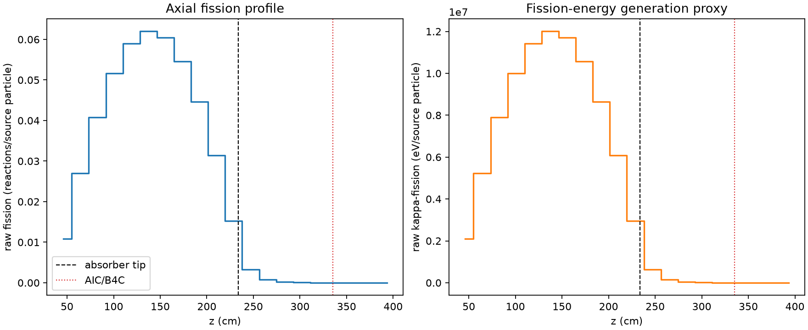
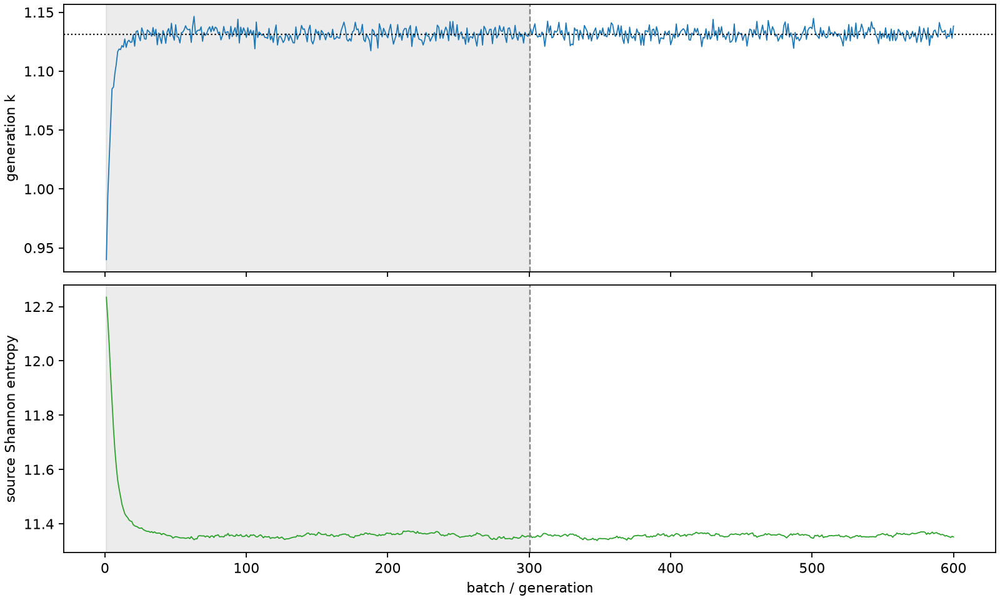

| field | value |
|---|---|
| experiment | V2-STAGE_256_OGRENCI_04-0013 |
| k | 1.1314144721899981 |
| MC standard error | 0.00017208731437695982 |
| seconds | 956.108408025997 |
| acceptance | not_assessed |
| convergence | review_required |
Completed is output integrity only; physical and statistical review required. Zero tallies do not prove zero production or zero uncertainty.
| diagnostic | value |
|---|---|
| geometric fuel voxels | 5280 |
| zero fission tally voxels | 291 |
| low signal fuel voxels | 1485 |
| low signal fission share | 0.00010695005305718145 |
| low signal kappa share | 0.00010699739624745976 |
| important fission share | 0.9500344930894868 |
| previous filter included | 3795 |
| duration estimate s | 1562.5173488400023 |
| actual minus estimate s | -606.4089408140053 |
| fission relative MC error | statistics |
|---|---|
| all_geometric_fuel | {"voxels": 5280, "positive_mean_voxels": 4989, "zero_mean_voxels": 291, "undefined_relative_error_voxels": 291, "median": 0.013133195713757024, "p95": 0.923749982788189, "maximum": 1.0000000000000002} |
| low_signal | {"voxels": 1485, "positive_mean_voxels": 1194, "zero_mean_voxels": 291, "undefined_relative_error_voxels": 291, "median": 0.6006509934007889, "p95": 1.0, "maximum": 1.0000000000000002} |
| important_95pct | {"voxels": 2503, "positive_mean_voxels": 2503, "zero_mean_voxels": 0, "undefined_relative_error_voxels": 0, "median": 0.007522218515774467, "p95": 0.012160898728650484, "maximum": 0.01482348863242817} |
| outside_previous_filter | {"voxels": 1485, "positive_mean_voxels": 1194, "zero_mean_voxels": 291, "undefined_relative_error_voxels": 291, "median": 0.6006509934007889, "p95": 1.0, "maximum": 1.0000000000000002} |
| kappa_fission relative MC error | statistics |
|---|---|
| all_geometric_fuel | {"voxels": 5280, "positive_mean_voxels": 4989, "zero_mean_voxels": 291, "undefined_relative_error_voxels": 291, "median": 0.01311829974491662, "p95": 0.923538559131416, "maximum": 1.0000000000000002} |
| low_signal | {"voxels": 1485, "positive_mean_voxels": 1194, "zero_mean_voxels": 291, "undefined_relative_error_voxels": 291, "median": 0.5995016177480985, "p95": 1.0, "maximum": 1.0000000000000002} |
| important_95pct | {"voxels": 2503, "positive_mean_voxels": 2503, "zero_mean_voxels": 0, "undefined_relative_error_voxels": 0, "median": 0.007513846789150353, "p95": 0.012146473792090967, "maximum": 0.014808184380875928} |
| outside_previous_filter | {"voxels": 1485, "positive_mean_voxels": 1194, "zero_mean_voxels": 291, "undefined_relative_error_voxels": 291, "median": 0.5995016177480985, "p95": 1.0, "maximum": 1.0000000000000002} |
| axial bin | fission share | kappa-fission share |
|---|---|---|
| 1 | 0.02357733310926728 | 0.023578356125026005 |
| 2 | 0.05833512743479271 | 0.05833488505785098 |
| 3 | 0.08819302992643267 | 0.08819265509805027 |
| 4 | 0.11176747511222332 | 0.11176689976649859 |
| 5 | 0.12772679384875935 | 0.12772605392985095 |
| 6 | 0.1342040630354033 | 0.13420331438026137 |
| 7 | 0.13087012659393168 | 0.13086928561401753 |
| 8 | 0.11816511592925133 | 0.11816434593340056 |
| 9 | 0.09651998311390358 | 0.09651952534863477 |
| 10 | 0.06809162455670302 | 0.06809098350711625 |
| 11 | 0.033111641531819155 | 0.03311269154926927 |
| 12 | 0.0071146945966766755 | 0.007117148879549646 |
| 13 | 0.0017297079458323695 | 0.001730343470502649 |
| 14 | 0.0004446466099524845 | 0.00044480838426991416 |
| 15 | 0.0001106867411895573 | 0.00011073174553764711 |
| 16 | 2.7761884466797935e-05 | 2.7777226381722194e-05 |
| 17 | 6.646657617238252e-06 | 6.65151080934552e-06 |
| 18 | 2.2274733887060853e-06 | 2.228501538759683e-06 |
| 19 | 9.517478240346203e-07 | 9.520725982048903e-07 |
| 20 | 3.6215056452530456e-07 | 3.61898835442578e-07 |
Histories include the inactive-to-active transition at batch 300. kappa-fission approximates fission energy production, not total heat deposition.

